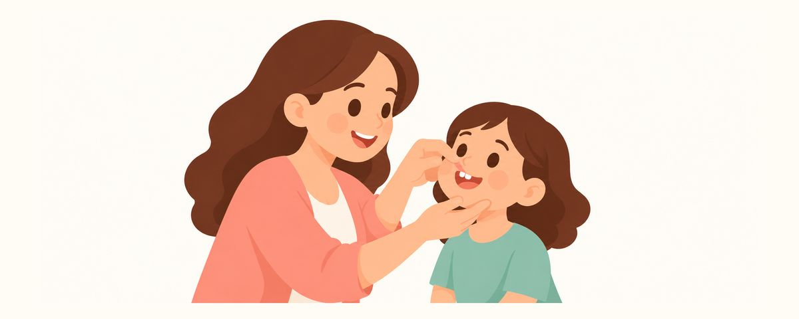

歯ぐき近くの白い線は、むし歯の最初のサイン：ホワイトスポットの見つけ方と元に戻すケア
前歯の歯ぐき近くにあるチョークのような白い斑点は、初期のむし歯かもしれません。なぜできるのか、月に一度おうちでチェックする方法、元に戻すためのケアと歯科へ行くべきサインをまとめました。
ひと目でチェック
- 歯ぐき近くのチョークのような白い斑点は初期のむし歯かも
- 月に1回、上くちびるをめくって前歯をチェック
- 斑点が黄色や茶色に？ 早めに歯科へ
子どもの前歯を見ていて、歯ぐきの近くに白く濁った帯が見えると「これは何？」と思いますよね。つやのある白ではなく、チョークのようにくもった白なら、むし歯が始まる最初のサインかもしれません。この段階ならまだ元に戻せるので、早く気づくことが何より大切です。
白い斑点はなぜできる？なぜ今がチャンスなの？
むし歯は、はじめから黒く穴があいて始まるわけではありません。歯の表面についた歯垢（細菌のかたまり）が食べものの糖を食べて酸をつくると、歯の表面からミネラルが少しずつ溶け出します。すると、なめらかでつやのあったところがチョークのように白く濁ってきます。これを歯科では「ホワイトスポット（白斑）」と呼びます。ただし、白い斑点がすべてむし歯というわけではありません。歯が生えてきたときからあった斑点などと見分ける必要があります。
この斑点は、主に歯ぐきと歯の境目に帯のようにできます。歯ブラシが届きにくく、歯垢が長くとどまりやすい場所だからです。特に上の前歯は上くちびるに隠れているので、保護者が気づきにくいのです。
うれしいことに、この段階ではまだ歯に穴はあいていません。表面はやわらかくなっていても穴はない状態なので、フッ素とていねいな歯みがきで、溶け出したミネラルを補ってまたかたい状態に戻すことができます。反対に、この時期を逃すと表面がくずれて穴があき、そこからは元に戻すのが難しいむし歯になります。色だけではどこまで進んだかわからないので、歯科で確認してもらいましょう。
「乳歯はどうせ抜けるから大丈夫」と思いがちですが、乳歯の奥歯は10〜12歳ごろまで長く使います。前歯に白い斑点があるなら、ほかの歯もむし歯のリスクが高いというサインかもしれないので、生活習慣もあわせて見直すときです。
月に一度、こんなふうにチェックしてケアしましょう
チェックは難しくありません。月に一度、日にちを決めておくと忘れません。
- 明るいところで、子どもを保護者のひざに寝かせるか、保護者が子どもの後ろに座って頭を軽くもたれさせます。
- 清潔なガーゼで前歯の表面を一度ふいて、水気をとります。歯が乾いているほうが、白い斑点がよく見えます。
- 上くちびるを指でやさしくめくって、上の前歯を歯ぐきとの境目まで見ます。
- 下の前歯や、見える奥歯も同じように見ていきます。
- 白い斑点が見えたら、場所をメモするか写真に残して、次の健診のときに見せます。
斑点を見つけたら、おうちではこんなふうにケアします。
- そこをフッ素入り歯みがき粉で、いつも以上にていねいにみがきます。3歳以上はグリーンピースくらいの量を使います。
- 寝る前の歯みがきは、子どもが先にみがいても、最後は保護者が仕上げをしてあげてください。寝ている間はだ液が減るので、むし歯が進みやすくなります。
- おやつや甘い飲みものは決まった時間だけにして、それ以外は水を飲ませます。甘い飲みものを少しずつ長くちびちび飲む習慣が、いちばん歯によくありません。
- 斑点を見つけたことは、歯科にも必ず伝えてください。
よくある間違いは、白い斑点を「歯がきれいだから白い」と思ってしまうことです。健康な歯はつやがあり、ホワイトスポットはつやがなくくもっている、という違いを覚えておいてください。子どもがくちびるをめくられるのを嫌がるときは、一緒に鏡を見ながら「歯のお友だち、元気かな？」と遊びのようにしてみましょう。
よくある質問
白い斑点は、本当にまたかたくなりますか？
まだ歯に穴があいていない段階なら、フッ素とていねいな歯みがきでまたかたい状態に戻せます。白い跡が残っていても、進行が止まっていて悪くなっていないこともあります。ただ、習慣がそのままだとまた進むことがあるので、おやつの時間と寝る前の歯みがきもあわせて気をつけてあげてください。
斑点があるのに、子どもは痛がっていません。それでも歯科に行ったほうがいいですか？
初期のむし歯は、たいてい痛みがありません。痛くないうちに確認してこそ元に戻せるチャンスをつかめるので、歯科に伝えてください。
白い斑点が黄色っぽくなってきました。もう手遅れですか？
色だけでは、どこまで進んだかはわかりません。進んだむし歯のこともあれば、進行が止まった跡のこともあるので、手遅れだと自分を責めるより、先のばしにせず歯科で確認してもらえば大丈夫です。
健診では何を見るのですか？
この時期の健診では、奥歯の間のむし歯や初期のホワイトスポットを見て、フッ素の使い方やおやつの習慣もあわせてチェックします。おうちで見つけた斑点があれば、そのときに必ず見せてください。
こんなときは歯科を受診しましょう
- 歯ぐきの近くに、チョークのような白い斑点や帯を見つけたとき
- 斑点が黄色や茶色に変わってきたとき
- 斑点の表面がざらざらしている、へこんでいるように感じるとき
- 斑点がだんだん広がる、またはいくつもの歯にできているとき
- 歯に黒い点や穴が見えるとき
必要な時期にお知らせで受け取りましょう
歯のカレンダーアプリにお子さんの生年月日（または出産予定日）を入力すると、これらの記事が必要な時期にお知らせとして届きます。無料で、登録も不要です。
出典
- AAPD · Policy on Early Childhood Caries (ECC): Classifications, Consequences, and Preventive Strategies (2023)
- MOHW_KR · 영유아 건강검진(구강검진) 안내 (2024)
この記事の情報は一般的な教育を目的としたもので、歯科医師による診療に代わるものではありません。お子さまの状態については歯科医師にご相談ください。